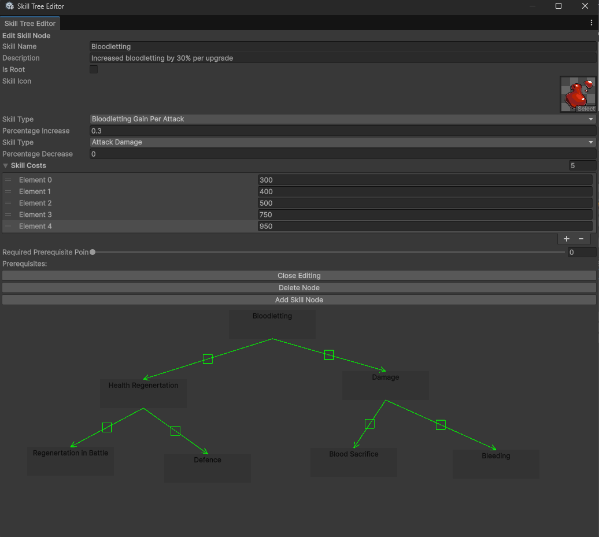
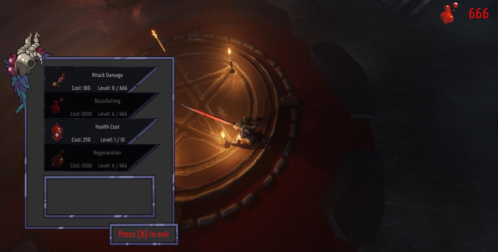
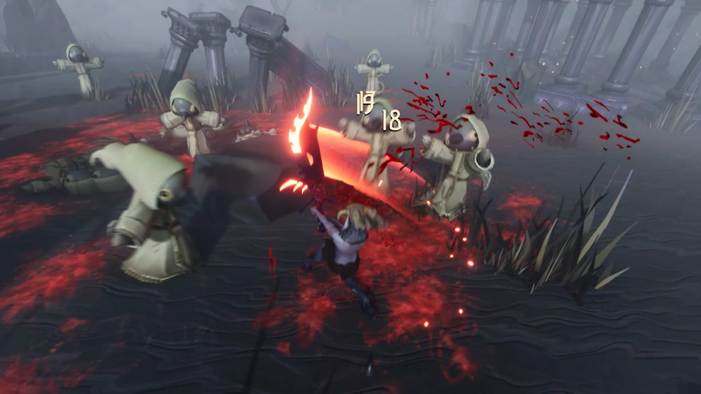
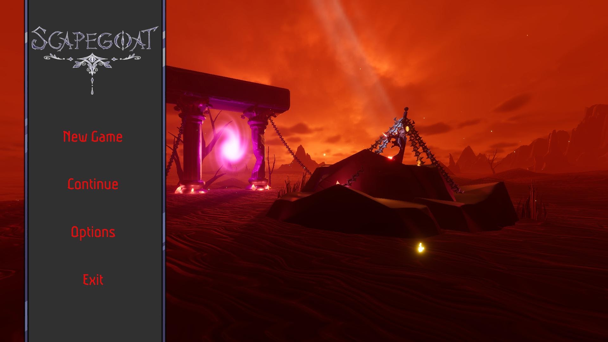
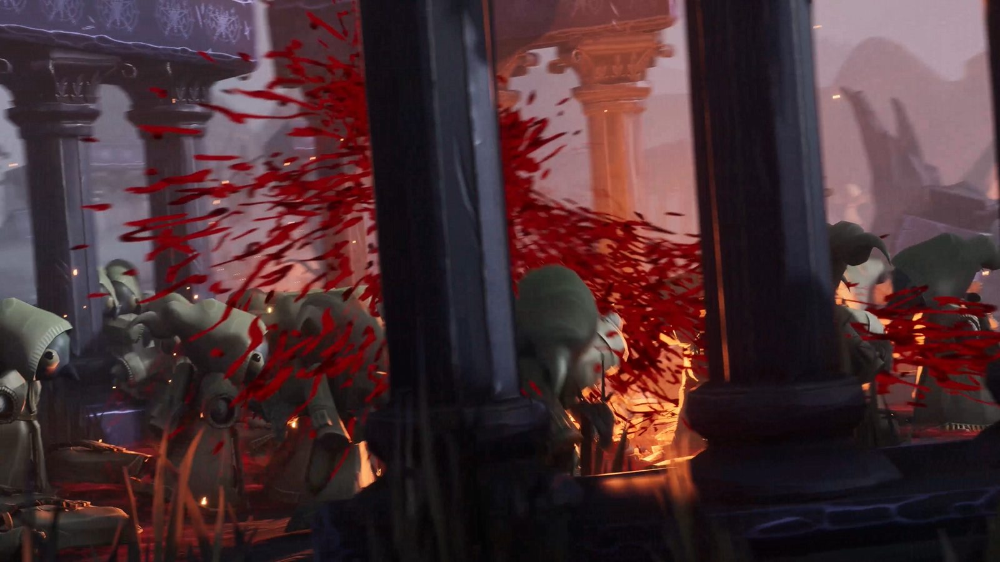

Skill Tree
Goal. Progression the designers can author and rebalance without code changes, with every stat bonus resolved in one place.
Data
Each skill is a SkillNode ScriptableObject: name, description, icon, the stat it improves and by how much per level, a cost per level, a GUID, and its position in the editor. The length of the cost array is the number of levels, so adding a level means adding a price.
Nodes can also carry prerequisites and a trade-off (a penalty paired with the bonus). Both can be authored in the editor, but the final game didn’t use them, so they aren’t enforced at runtime.
Editor tool
Designers build the tree in a custom editor window, under Tools ▸ Skill Tree Editor:
- Add Skill Node creates the asset and its GUID in one click.
- Drag nodes to lay out the tree. Right-drag from one node to another to make it a prerequisite; connections are drawn as arrows, and clicking a connection’s handle removes it.
- Selecting a node edits it in place, and renaming a skill renames its asset file too.
- The prerequisite-points slider only allows reachable values. Its minimum and maximum come from walking the prerequisite graph, with cycle detection.
- Deleting a node asks first, then removes it from every other node’s prerequisites.

Buying upgrades
In the hub, a pentagram opens the upgrade menu. Each SkillButton reads its node and shows the next level’s cost (or “Max Level”) and the current level. A button can only be pressed when the player can afford it and it isn’t maxed. Buying deducts blood currency through an event, raises the level, recalculates the player’s stats and refreshes every button, since a purchase changes what the player can afford everywhere.

Applying stats
ApplyUpgrades() is the only place upgrades turn into stats. It sums every unlocked node’s bonus per stat type in one pass, then writes each total to the player. The bonuses are added, so the order of the nodes doesn’t matter. A new stat is one enum value and one switch case; a new skill is just a new asset.
public void ApplyUpgrades()
{
Dictionary<SkillTypes, float> upgrades = new Dictionary<SkillTypes, float>();
foreach (SkillNode node in _skillNodes)
{
if (node.currentLevel > 0)
{
upgrades[node.skillTypePositive] =
upgrades.GetValueOrDefault(node.skillTypePositive, 0f)
+ node.percentageIncrease * node.currentLevel;
}
}
foreach (SkillTypes type in upgrades.Keys)
{
switch (type)
{
case SkillTypes.AttackDamage:
_attackModifier = _baseAttackModifier + upgrades[type];
break;
case SkillTypes.MaximumHealth:
_maxHealth = _baseMaxHealth * (1 + upgrades[type]);
_currentHealth = _maxHealth;
break;
case SkillTypes.BloodlettingRegenerationRate:
_bloodlettingRegenerationRate =
_baseBloodlettingRegenerationRate + upgrades[type];
break;
case SkillTypes.HealthCostOfUsingTheSword:
_healthCostOfUsingTheSword =
_baseHealthCostOfUsingTheSword - upgrades[type];
break;
case SkillTypes.BloodlettingGainPerAttack:
_bloodlettingGainPerAttack =
_baseBloodlettingGainPerAttack + upgrades[type];
break;
}
}
}
Save System
Goal. Persistence that any feature can join without touching the save code, with save files you can read while debugging.
Design
Anything that needs saving implements one interface:
public interface ISave
{
void LoadData(GameData data);
void SaveData(ref GameData data);
}- SaveManager
- A singleton that finds every
ISavecomponent in the scene at startup, inactive ones included. It’s the single entry point for New Game, Save and Load. - FileDataHandler
- Writes
GameDataas JSON topersistentDataPath/<profile>/saveData.json, creating folders as needed. An optional XOR pass obfuscates the file; with it off, saves are plain JSON you can read and edit while debugging. - GameData
- A flat container: the blood currency, plus serializable dictionaries keyed by ID for skill levels and unlocked portals.
Flow
public void SaveGame()
{
foreach (ISave saveComponent in _saveComponents)
{
saveComponent.SaveData(ref _gameData);
}
_fileDataHandler.Save(_gameData, selectedProfileID);
}
public void LoadGame()
{
_gameData = _fileDataHandler.Load(selectedProfileID);
// if no saved game data, create new game data
if (_gameData == null)
{
NewGame();
return;
}
// Load data into save components
foreach (ISave saveComponent in _saveComponents)
{
saveComponent.LoadData(_gameData);
}
}If there’s no save yet, NewGame() creates fresh data, saves it once and loads it back, so every component starts from the same defaults.

Skill levels in the save
Skill levels are stored by each node’s GUID, not its name or file, so designers can rename and reorganise skills without breaking existing saves. After loading, ApplyUpgrades() rebuilds the stats from the restored levels.
public void LoadData(GameData data)
{
LoadAllSkillNodes();
_skillNodes.ForEach(node => node.currentLevel = 0);
foreach (SkillNode node in _skillNodes)
{
if (data.skillTree.TryGetValue(node.SkillID, out int level))
{
node.currentLevel = level;
}
}
ApplyUpgrades();
}
public void SaveData(ref GameData data)
{
bool newGame = (data.skillTree == null || data.skillTree.Count == 0);
data.skillTree = new SerializableDictionary<string, int>();
if (_skillNodes.Count == 0)
LoadAllSkillNodes();
foreach (SkillNode node in _skillNodes)
{
data.skillTree.Add(node.SkillID, newGame ? 0 : node.currentLevel);
}
}In production
The interface held up when someone else used it. Another programmer added portal unlocks by implementing ISave and adding one dictionary to GameData. Neither the SaveManager nor the file layer had to change.
Results
- The designers authored the skills themselves in the editor window, without code changes.
- Every stat bonus resolves in one function, so balancing questions have one place to look.
- Saves survive renamed or moved skill assets, because levels are keyed by GUID.
- Persistence was extended by another programmer without any changes to my code.
What I’d Change
- Keep runtime state off the ScriptableObjects. Skill levels live on the
SkillNodeassets. Loading resets them, so builds behave, but in the editor, upgrades bought in Play mode stick to the asset. I’d keep levels in a dictionary keyed by GUID and treat the nodes as read-only definitions. - Reset stats to base inside
ApplyUpgrades(). It only writes stats that have upgrades, so it relies onStart()having reset the rest first. - Let components register themselves. The SaveManager finds
ISavecomponents once, at startup. Registering inOnEnableand unregistering inOnDisablewould also cover objects from scenes loaded later. - Save atomically. Writing to a temporary file and then swapping it in means a crash mid-save can’t corrupt the only save file.
